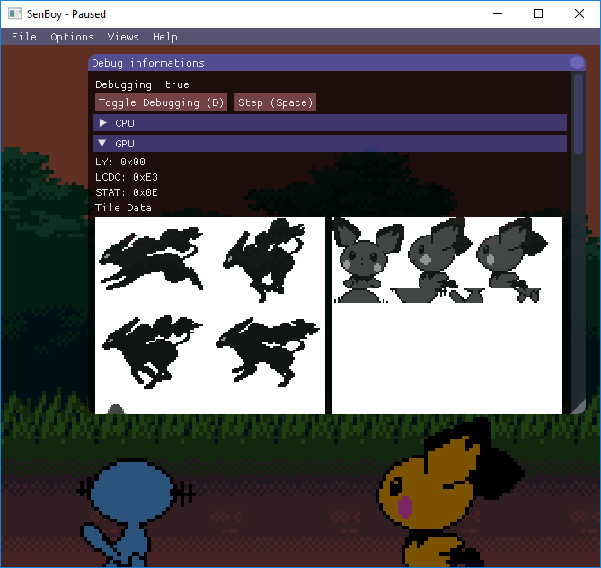
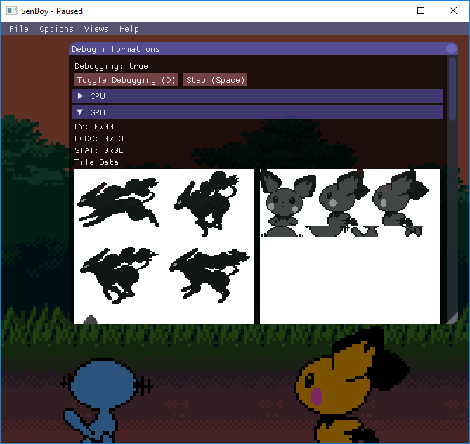

Here is my (Sen's) little homepage, where you can find some informations about me and my projects (not much, this is still really a Work in Progress). I'm a French programmer interested mostly in game development and rendering. Use the tabs to learn more!

 


 GitHub
GitHub Twitter
Twitter